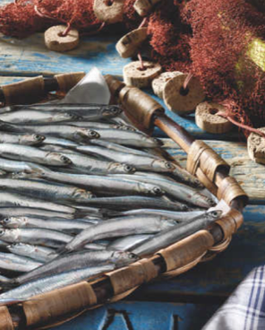

<div id="destacado1" class="destacado contenedor col-12">
  <h2>Alimentación Saludable</h2>
</div>
<div id="destacado2" class="destacado contenedor col-12">
  <h2>Productos Locales</h2>
  
  <div class="contenido">
    <div class="text-over">
      ¡Ya está aquí la anchoa del Cantábrico!
    </div>
  </div>
</div>
